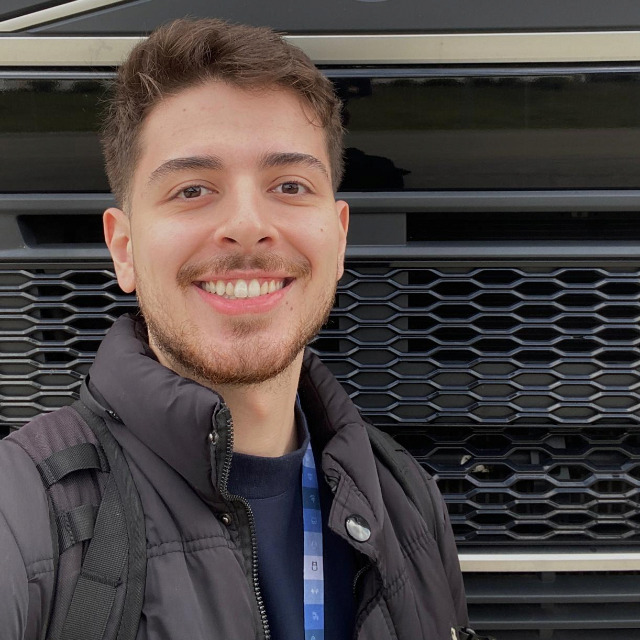

Gabriel de Almeida Spadafora
Estudante de Engenharia de Computação - UTFPR
Atua no desenvolvimento de software embarcado na Volvo Group, com foco em sistemas de controle para a indústria automotiva. É também um entusiasta de Inteligência Artificial e programação competitiva, com projetos e pesquisas em Machine Learning e Visão Computacional.
